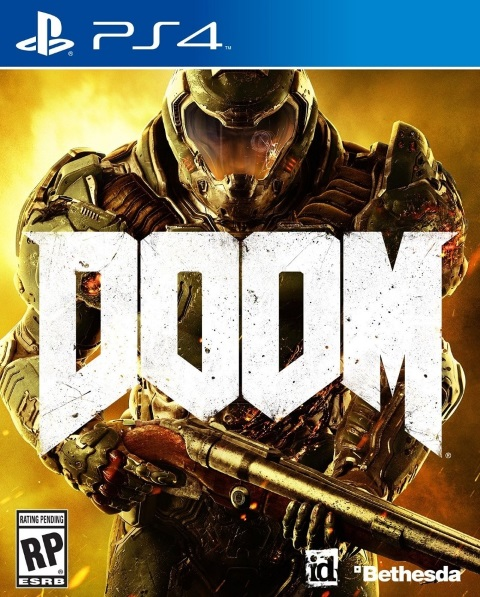

|  |
DoomDoom é um jogo do gênero first-person shooter produzido pela id Software e publicado pela Bethesda Softworks. O jogo pretende dar um reinicio à série Doom e é o primeiro grande lançamento desde Doom 3 em 2004. Doom foi lançado para Microsoft Windows, PlayStation 4 e Xbox One no dia 13 de Maio de 2016.
R$ 150,90
|